La vidéo de Pursuing AI met en lumière **WAN 2.5**, un outil de pointe en matière d'intelligence artificielle générative, capable de produire des vidéos ultra-réalistes dotées d'un audio natif parfaitement synchronisé. En explorant les fonctionnalités de cette plateforme, le créateur démontre la puissance des technologies de conversion d'image en vidéo (*image-to-video*) et de texte en vidéo (*text-to-video*). À travers des démonstrations saisissantes de réalisme — qu'il s'agisse de capturer un moment estival nostalgique à partir d'une simple photo ou de modéliser une musicienne face à des montagnes — la vidéo illustre la capacité de WAN 2.5 à gérer avec une précision troublante les expressions faciales, les mouvements anatomiques complexes et les arrière-plans cinématographiques.
La méthode présentée repose sur un workflow accessible mais hautement performant : l'utilisateur peut soit importer une image de référence pour l'animer, soit rédiger un prompt textuel détaillé, en s'appuyant si nécessaire sur un guide de prompts externe pour maîtriser l'éclairage et les dynamiques de plans. De plus, l'outil intègre une fonctionnalité performante de création d'humains numériques (*digital humans*) à partir d'une image fixe et d'un fichier audio, ouvrant la voie à des applications narratives et publicitaires poussées. Structurée autour de différents paliers tarifaires basés sur un système de crédits, la plateforme démocratise l'accès à la production audiovisuelle haute définition tout en répondant aux exigences des professionnels de la création de contenu.
Pour les créateurs vidéo, l'adoption de WAN 2.5 représente un levier stratégique majeur pour réduire drastiquement les coûts de production tout en maximisant l'impact visuel. L'intégration native de l'audio et la flexibilité des formats permettent d'itérer rapidement sur des concepts créatifs variés, qu'il s'agisse de clips promotionnels, de fictions ou de contenus réseaux sociaux. En maîtrisant la tarification par crédits (qui module le coût selon la résolution, de 480p à 720p) et en s'appuyant sur les options de licence commerciale incluses dès les premiers abonnements, les vidéastes disposent d'un arsenal technologique complet pour transformer radicalement leur pipeline de production sans nécessiter de lourdes équipes de tournage.
Bonsoir à tous. Ce soir, je veux partager de puissantes leçons sur l'intelligence artificielle que j'ai apprises en explorant l'IA. Ce time-lapse a l'air réel. Cette vidéo a aussi l'air réelle. Et honnêtement, celle-ci est absolument insensée. Et devinez quoi ? Tous ces clips sont générés par IA à l'aide d'un seul outil, WAN 2.5.
Interface & Outils : Présentation de clips vidéo générés par IA (outil WAN 2.5).
Contenu textuel & Code : Visuels réalistes générés par intelligence artificielle : timelapse, scène de forêt, patinoire, danseur sous la pluie, chantier de grues.
Action / Démonstration : Démonstration visuelle de différents clips vidéo générés par le modèle WAN 2.5.
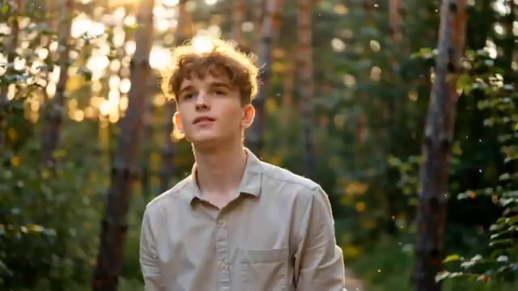
🔍 Agrandir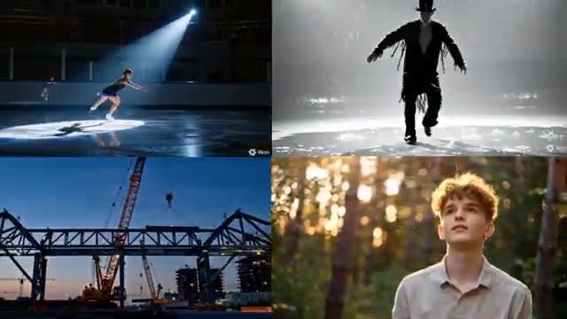
🔍 AgrandirC'est Pursuing AI, et vous regardez le rapport de recherche. WAN 2.5 est actuellement l'un des outils les plus puissants pour générer de l'audio et de la vidéo natifs. Ce soir, je veux partager un site web puissant sur les vidéos par IA qui... Vous pouvez créer à la fois de l'image vers vidéo et du texte vers vidéo, avec un contrôle total sur les formats d'image, les résolutions et la durée.
Interface & Outils : Navigateur web affichant le site internet officiel de l'outil de génération vidéo WAN 2.5.
Contenu textuel & Code : Texte affiché : "Create Cinematic AI Videos — with Wan2.5", "Image-to-Video", "Text-to-Video", "Duration: 5s", "Resolution: 480P", "Aspect Ratio: 16:9", et un champ de prompt textuel.
Action / Démonstration : Présentation et navigation sur le site web de l'outil WAN 2.5, mettant en avant les fonctionnalités de création de vidéos à partir d'images ou de textes avec des options de configuration.
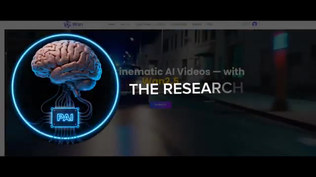
🔍 Agrandir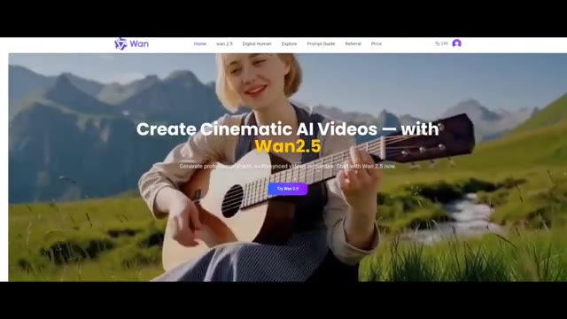
🔍 AgrandirPour référence, générer une vidéo de 5 secondes en 480p coûte 5 crédits, et générer la même vidéo de 5 secondes en 720p coûte 9 crédits. Maintenant, laissez-moi vous montrer quelques tests que j'ai effectués en utilisant WAN 2.5. D'abord, j'ai téléchargé cette image et je lui ai demandé de créer un moment estival nostalgique. Le résultat était impressionnant.
Interface & Outils : Interface web de l'outil de génération vidéo WAN (version 2.5).
Contenu textuel & Code : Menus de navigation (Home, Wan 2.5, Digital Human, Explore, Prompt Guide, Referral, Price), options de durée (5s, 10s), de résolution (480P, 720P, 1080P), et boutons de génération violet "Generate Video".
Action / Démonstration : Présentation des coûts de génération en crédits selon la résolution et démonstration d'un test de génération vidéo à partir d'une image.
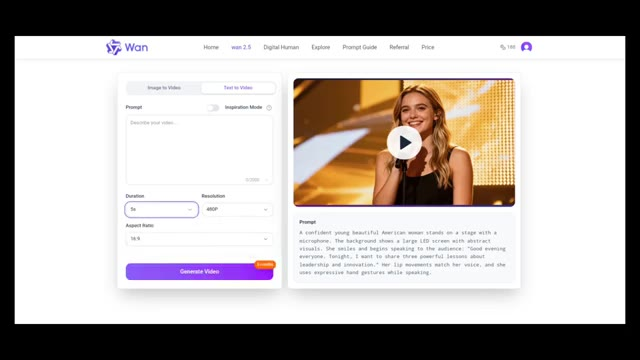
🔍 Agrandir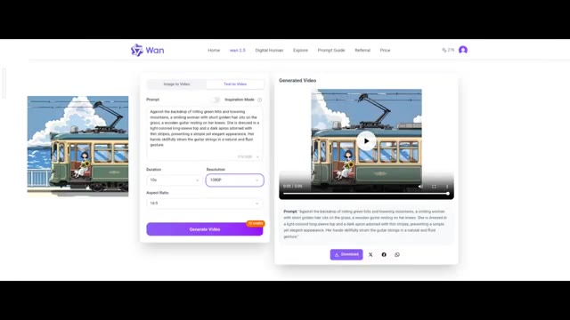
🔍 AgrandirLes visuels semblaient authentiques et l'audio était parfaitement synchronisé avec la scène. Ensuite, j'ai essayé l'option texte-vidéo. Je lui ai demandé de générer une femme jouant de la guitare avec un arrière-plan de montagnes. Et voici le résultat. Regardez simplement l'arrière-plan, les mouvements des mains et les expressions faciales.
Interface & Outils : Interface web de l'outil de génération vidéo IA "Wan" (Wan 2.5).
Contenu textuel & Code : Texte du prompt visible : "A vintage tram glides along the coast. Outside, blue sky and sparkling sea. A girl sits by the window, holding sunflowers, gazing softly. Sunlight dances, wind brushes her hair - a quiet, nostalgic summer moment." Paramètres affichés : Durée 5s, Résolution 720P.
Action / Démonstration : Présentation de l'interface de génération vidéo par IA et visualisation des résultats de rendu vidéo (tramway et femme jouant de la guitare).
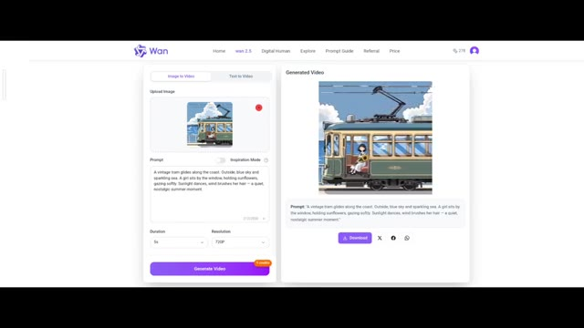
🔍 Agrandir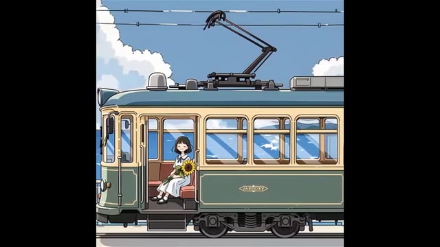
🔍 Agrandir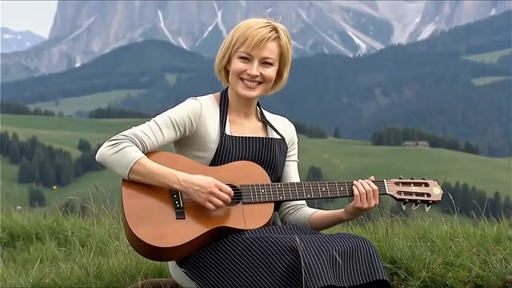
🔍 Agrandir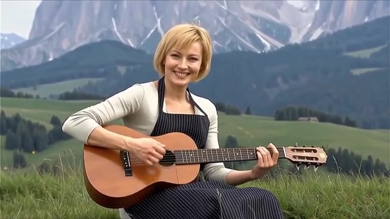
🔍 AgrandirTout a l'air incroyablement réel. Vraiment incroyable. Et si vous n'avez pas confiance en vous pour rédiger des prompts, ne vous inquiétez pas. Vous pouvez utiliser leur guide de prompts lié dans la description et le commentaire épinglé. Ce guide vous aide à créer facilement des vidéos de haute qualité. Il explique tout, comment gérer l'éclairage, créer des plans cinématographiques, contrôler le mouvement, façonner les émotions des personnages, et bien plus encore.
Interface & Outils : Navigateur web affichant un guide de prompts et des exemples de vidéos générées par IA.
Contenu textuel & Code : Titres visibles : "Cinematic Aesthetics", "Light Source Type", "Motion Control", "Movement", accompagnés de descriptions textuelles de prompts et de mini-lecteurs vidéo.
Action / Démonstration : Le présentateur fait défiler le guide de prompts en ligne pour illustrer la structure et les exemples fournis pour maîtriser la génération de vidéos.
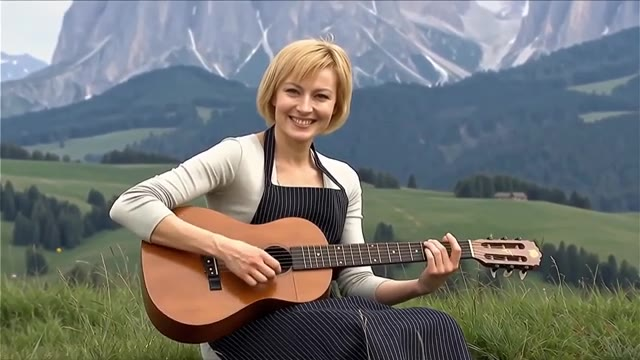
🔍 Agrandir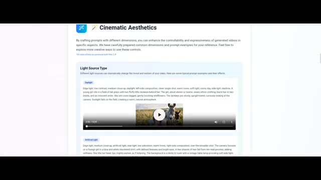
🔍 Agrandir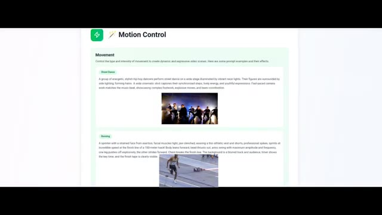
🔍 AgrandirVous pouvez également créer des humains numériques sur ce site Web. Il vous suffit de télécharger une image de votre personnage, d'ajouter de l'audio, de décrire le mouvement, de cliquer sur générer, et vous obtiendrez instantanément votre humain numérique. J'ai été second après Joe toute ma vie dans tout. Et je ne serai pas la personne dont vous vous contentez simplement parce que vous ne pouvez pas l'avoir.
Interface & Outils : Interface web de création d'humains numériques et de génération vidéo par IA.
Contenu textuel & Code : Menus "Create Your Digital Human", "Upload Image", "Upload Audio", "Prompt", "Resolution" (480P, 720P) et bouton "Generate Now". [SS_ACTION] Démonstration visuelle de l'interface de création d'humains virtuels et présentation de différents exemples de générations vidéo réussies.
Action / Démonstration : Démonstration pédagogique et présentation du workflow.
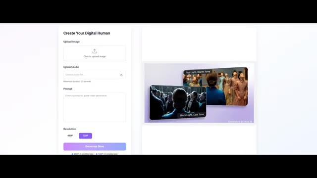
🔍 Agrandir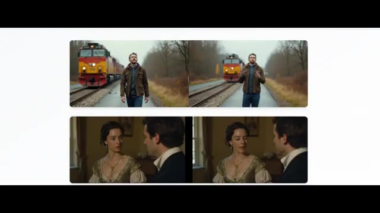
🔍 Agrandir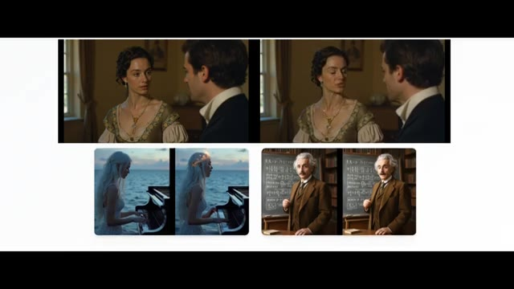
🔍 AgrandirSi vous explorez la section d'exploration du site web, vous trouverez des tonnes d'exemples incroyables de WAN 2.5 qui montrent à quel point cet outil est vraiment puissant. Le lien du site web est dans la description et le commentaire épinglé. Maintenant, parlons des tarifs. Comme vous le savez, chaque bon produit a un coût. Et WAN 2.5 ne fait pas exception.
Interface & Outils : Site web officiel de Wan 2.5 (section Explore et page Tarifs / Pricing).
Contenu textuel & Code : En-tête "Wan2.5 Explore", description "Discover stunning AI-generated videos...", cartes d'exemples avec boutons "Copy Prompt" et "Details". Page de tarification affichant quatre formules : Starter (9,9 $ / 100 crédits), Basic (29,9 $ / 330 crédits), Plus (49,9 $ / 600 crédits, marqué "Most Popular") et Professional (99,9 $ / 1250 crédits) avec les détails de chaque offre (accès unique, export HD, licence commerciale, support).
Action / Démonstration : Défilement (scroll) à travers la galerie d'exemples de la section explore du site web, puis transition vers l'affichage des différentes options de tarification.
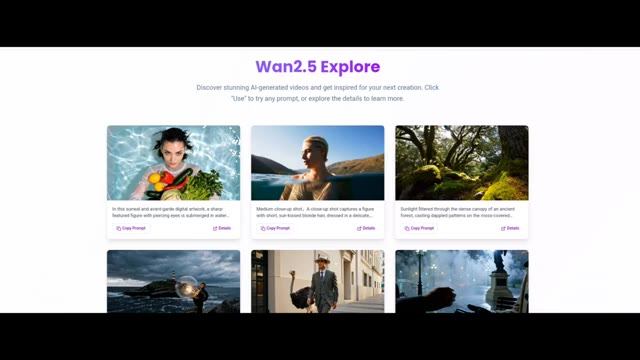
🔍 Agrandir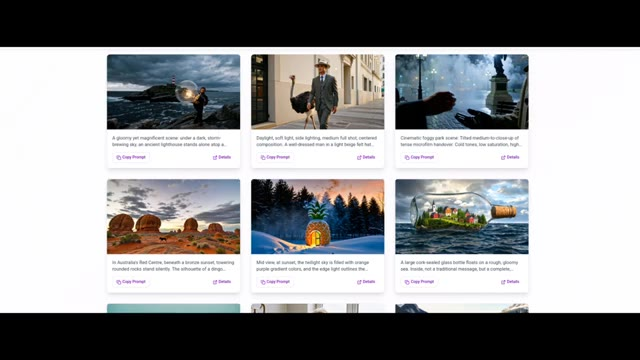
🔍 Agrandir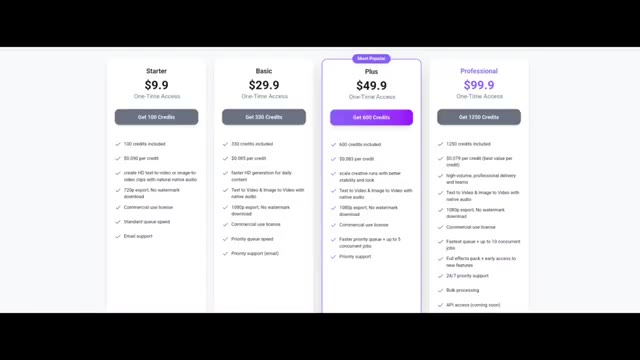
🔍 AgrandirIl propose quatre formules. La formule starter commence à 9,9, vous donnant 100 crédits, ce qui signifie que chaque crédit coûte environ 0,09 dollar. Plutôt bien. Avec la formule starter, vous pouvez créer des vidéos HD à partir de texte et d'images, utiliser les résultats commercialement, bénéficier d'une vitesse de file d'attente standard et recevoir un support par e-mail.
Interface & Outils : Page web affichant les grilles de tarification d'un outil vidéo par IA.
Contenu textuel & Code : Quatre colonnes de formules : "Starter" à 9,9 $ (100 crédits, 0,090 $ par crédit, création de vidéos HD texte/image, exportation 720p sans filigrane, licence commerciale, file d'attente standard, support email), "Basic" à 29,9 $, "Plus" à 49,9 $ (marquée "Most Popular"), et "Professional" à 99,9 $.
Action / Démonstration : Affichage de la grille tarifaire pour illustrer les différentes options de prix et les fonctionnalités incluses.
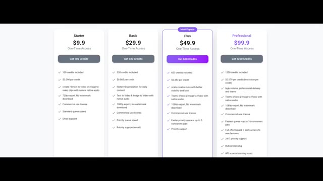
🔍 AgrandirEnsuite, vous avez le forfait de base, à partir de 29,9, avec 330 crédits, suivi des forfaits plus et professionnel qui offrent une génération plus rapide et des limites plus élevées. Donc, si vous souhaitez créer des vidéos cinématiques de haute qualité pour vos projets, vous pouvez consulter le lien dans la description et le commentaire épinglé.
Interface & Outils : Page web de tarification et interface principale de l'outil Wan 2.5 AI Video Generator.
Contenu textuel & Code : Sur l'image 1, les options de tarification : Starter (9,9$), Basic (29,9$), Plus (49,9$) et Professional (99,9$) avec leurs crédits respectifs (100, 330, 600, 1250 crédits). Sur l'image 2, le titre "Wan 2.5 AI Video Generator with Audio Sync" et les options de prompt.
Action / Démonstration : Présentation des différents abonnements et des fonctionnalités de l'outil de génération de vidéo par IA.
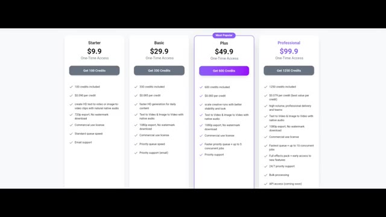
🔍 Agrandir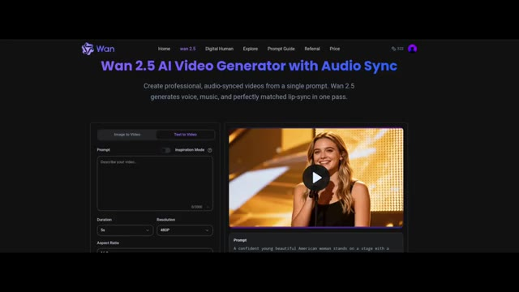
🔍 Agrandir